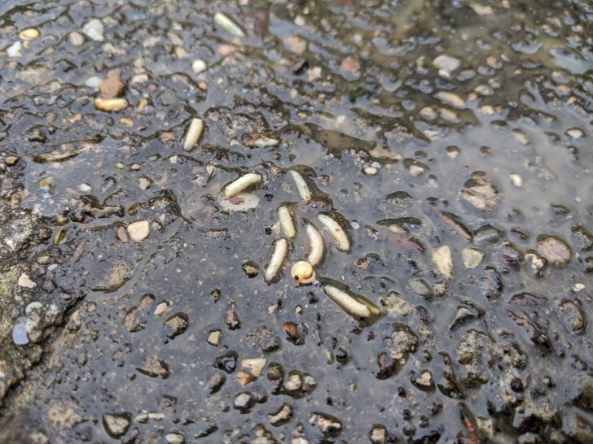

تابستان که از راه میرسد، مهمانان ناخواندهای هم به خانههای ما سر میزنند که گاهی لذت شبهای گرم را به کابوس تبدیل میکنند. پشهها با وزوز آزاردهنده و نیشهای خارشدار خود، نهتنها آرامش را از شما میگیرند، بلکه میتوانند ناقل بیماریهای خطرناکی باشند که سالانه جان هزاران نفر را در سراسر جهان میگیرند.
پشهها از قدیمیترین و مقاومترین حشرات روی زمین هستند که در هر نقطه از کره زمین، به جز قطبها، زندگی میکنند. ایران نیز به دلیل تنوع آب و هوایی و وجود مناطق مرطوب و گرم، یکی از زیستگاههای اصلی این حشرات مزاحم است. از استانهای شمالی و جنوبی گرفته تا حتی مناطق کویری، پشهها در هر جایی که آب راکد و دمای مناسب وجود داشته باشد، تکثیر میشوند.
اما چرا باید پشهها را جدی بگیریم؟ آیا فقط نیشهای خارشدار و صدای آزاردهنده آنها مشکل است؟ خیر! پشهها ناقل بیماریهایی مانند مالاریا، تب دنگی، زیکا، تب زرد و آنسفالیت هستند که برخی از آنها میتوانند کشنده باشند. در سالهای اخیر، شیوع تب دنگی در برخی مناطق ایران زنگ خطری جدی برای سلامت عمومی به صدا درآورده است.
در این مقاله جامع و تخصصی، شما را با انواع پشههای رایج در ایران، بیماریهای ناشی از آنها، روشهای تشخیص و پیشگیری، و مهمتر از همه، روشهای اصولی و تخصصی سمپاشی پشه آشنا میکنیم. اگر شما هم در تهران یا سایر شهرهای ایران از دست پشهها کلافه شدهاید و نگران سلامت خانوادهتان هستید، این مقاله راهنمای کامل شما خواهد بود.
پشهها حشرات کوچکی از راسته دوبالان (Diptera) و خانواده Culicidae هستند که بیش از ۳۵۰۰ گونه در سراسر جهان شناسایی شدهاند. در ایران نیز بیش از ۶۰ گونه مختلف پشه زندگی میکنند که هر کدام ویژگیهای خاص خود را دارند.
| ویژگی | توضیح |
|---|---|
| اندازه | معمولاً بین ۳ تا ۹ میلیمتر |
| رنگ | قهوهای، خاکستری یا سیاه با نوارهای سفید روی پاها و بدن |
| طول عمر | مادهها تا ۳ هفته و نرها تا ۱ هفته |
| تغذیه | مادهها از خون برای تولید تخم و نرها از شهد گلها و شیره گیاهان تغذیه میکنند. |
| تخمگذاری | هر ماده تا ۳۰۰ تخم در هر نوبت روی آب راکد میگذارد. |
| دوره رشد | از تخم تا پشه بالغ حدود ۷ تا ۱۴ روز طول میکشد. |

چرخه زندگی پشه شامل چهار مرحله است که سه مرحله اول (تخم، لارو و شفیره) در آب سپری میشود:
🎥 کلیپ همه چیز درباره پشه آئدس: مشاهده در آپارات
تشخیص زودهنگام وجود پشهها میتواند از تبدیل شدن یک آلودگی کوچک به یک بحران بزرگ جلوگیری کند. این نشانهها را جدی بگیرید:
پشهها بهعنوان یکی از مرگبارترین موجودات روی زمین، سالانه بیش از ۷۰۰ هزار نفر را در سراسر جهان به کام مرگ میفرستند. این آمار توسط سازمان جهانی بهداشت (WHO) تأیید شده است.
| بیماری | ناقل (پشه) | علائم اصلی | مناطق درگیر در ایران |
|---|---|---|---|
| مالاریا | آنوفل | تب، لرز، تعریق، سردرد و خستگی شدید. در موارد شدید میتواند کشنده باشد. | جنوب، سیستان و بلوچستان، هرمزگان، خوزستان |
| تب دنگی | آئدس | تب شدید، سردرد شدید، درد عضلات و مفاصل، بثورات پوستی. در موارد شدید به تب خونریزیدهنده دنگی تبدیل میشود. | شمال و جنوب ایران (گزارشهای اخیر) |
| تب زرد | آئدس | تب، سردرد، درد عضلانی، حالت تهوع، زردی پوست و چشمها. در موارد شدید میتواند کشنده باشد. | مناطق گرمسیری (نادر در ایران) |
| آنسفالیت ژاپنی | کولکس | تب، سردرد، گیجی، تشنج و کما. میتواند باعث آسیب دائمی مغز شود. | مناطق شمالی و غربی ایران |
| زیکا | آئدس | تب خفیف، بثورات پوستی، درد مفاصل. در زنان باردار میتواند باعث میکروسفالی جنین شود. | موارد گزارششده در ایران |
| فیلاریاز (فیل پا) | کولکس و آنوفل | تورم شدید اندامها، آسیب به سیستم لنفاوی، ناتوانی طولانیمدت. | مناطق گرمسیری و جنوب ایران |
کنترل پشهها نیازمند یک رویکرد جامع و چندمرحلهای است. برای کنترل مؤثر، باید از ترکیبی از روشها استفاده کرد. در شرکت سمپاشی نانوفناوران، از روش مدیریت تلفیقی آفات (IPM) برای کنترل پشه استفاده میکنیم که شامل مراحل زیر است:
اولین و مهمترین گام، شناسایی گونه پشه و مکانهای تخمگذاری و پرورش آنها است. کارشناسان ما با بررسی دقیق محیط، موارد زیر را مشخص میکنند:
بهترین و مؤثرترین راه کنترل پشه، حذف مکانهای تخمگذاری و پرورش آنهاست. اقدامات زیر را جدی بگیرید:
در صورت نیاز و با توجه به شدت آلودگی، کارشناسان ما از روشهای زیر استفاده میکنند:
این روش با تولید ذرات بسیار ریز سم (قطرات ۵ تا ۲۰ میکرون) که بهصورت مه در فضا پخش میشوند، پشههای بالغ را بهسرعت از بین میبرد. مزایای این روش عبارتند از:
در این روش، سم بهکمک حرارت به بخار تبدیل شده و در فضا پخش میشود. این روش برای محیطهای بزرگ مانند پارکها، باغها و مکانهای باز بسیار مؤثر است.
هدف این روش، از بین بردن لاروهای پشه در منابع آب است. با استفاده از سموم لاروکش مخصوص، رشد و تکامل پشهها در همان مراحل اولیه متوقف میشود. این روش کاملاً ایمن و برای محیط زیست کمخطر است.
این سموم روی دیوارها، سطوح و نقاط استراحت پشهها پاشش میشوند و اثر باقیمانده دارند.
تلههای نوری (الکتریکی و UV) با جذب پشهها به سمت نور و برقگرفتن آن